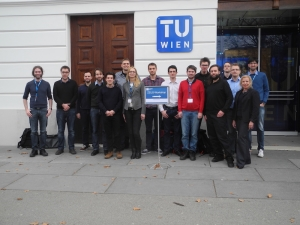

ZEUS Workshop 2016
January 27-28, 2016, Vienna, Austria
Program
Wednesday, January 27, 2016
- 12:00 Registration
- 13:00 Welcome
- 13:15 Keynote by Michael Nebel and Veronika Cottlehuber. INTERACCT
- 14:00 Session 1 - Process Modeling
Michael Hanser, Claudio Di Ciccio and Jan Mendling. A Novel Framework for Visualizing Declarative Process Models
Richard Braun SemFrameX - Towards a Framework for the Semantic Justification of BPMN Adaptations - 15:00 Coffee Break
- 15:30 Session 2 - Process Enactment
Budoor Allehyani and Stephan Reiff-Marganiec. Maintaining Goals of Business Processes during Runtime Reconfigurations
Felix Baumann and Dieter Roller. 3D Printing Process Pipeline on the Internet
Matthias Geiger, Simon Harrer and Jörg Lenhard. Process Engine Benchmarking with Betsy - Current Status and Future Directions - 17:00 Closing
- 18:00 Sightseeing tour through the inner city
- 20:00 Dinner at a typical Viennese restaurant: Feuerwehr Wagner
Thursday, January 28, 2016
- 09.00 Keynote by Jan Mendling. From Scientific Process Management to Process Science: Towards an empirical research agenda for Business Process Management
- 10:00 Coffee Break
- 10:30 Session 3 - Short Papers
Olena Skarlat. Elastic Manufacturing Process Landscapes
Timm Caporale. A Tool for Natural Language Oriented Business Process Modeling
Meike Ullrich and Andreas Schoknecht. (Business Process) Models from an Educational Perspective - 12:00 Lunch Break
- 13:30 Session 4 - Applied Service and Cloud Technologies
Matteo Nardelli. A Framework for Data Stream Applications in Distributed Cloud
Frank Steimle and Matthias Wieland. The ECHO System - An mHealth Solution to Support Treatment of Chronic Patients - 14:30 Best Presentation Award
- 15:00 Closing
